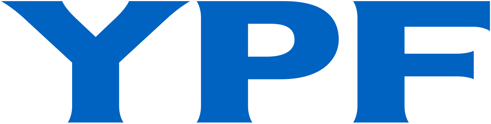
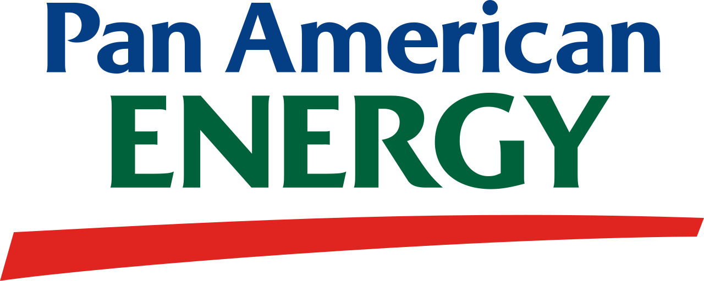
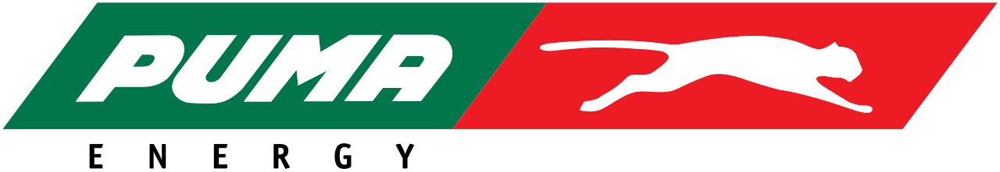
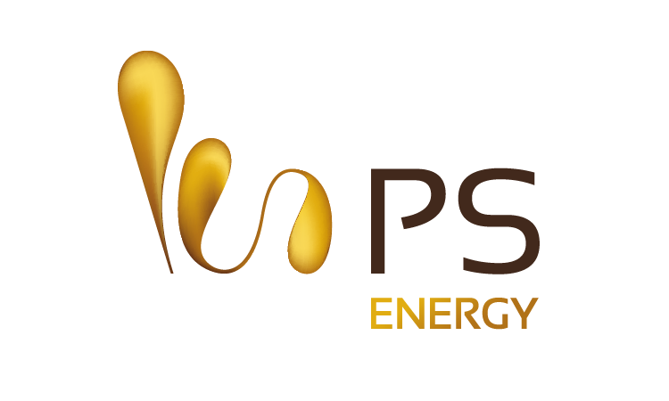

We jointly develop solutions for the extractive industries, backed by the technological support of a global company.
From operational data to real-time decisions through AI and Data Physics
Field experience and technical knowledge of Oil & Gas combined with advanced models to improve efficiency, safety, and production.
Request Demo →Our clients





Operational Downtime
Predictive models to anticipate failures and minimize unscheduled maintenance
Production & Efficiency
We improve performance of wells, plants, and critical equipment
Safety & HSE
Automatic detection of unsafe acts and anomalies through real-time video